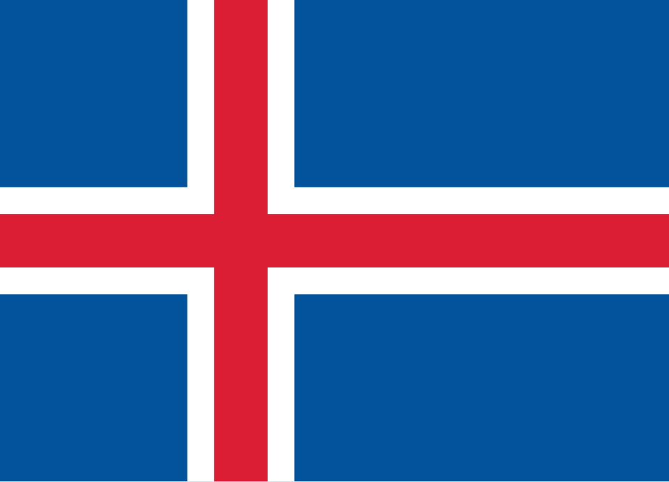
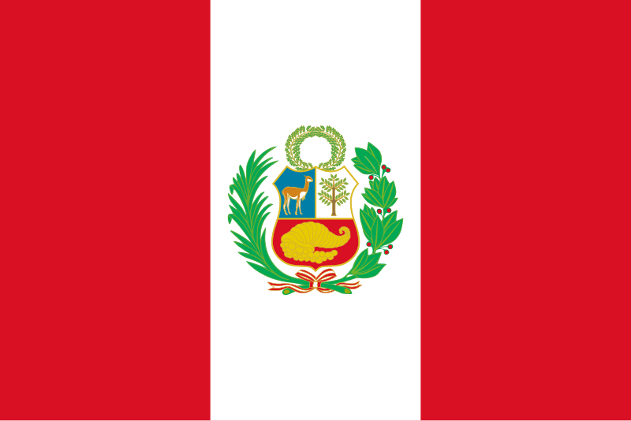

My favorite destinations

Kyoto
Ancient temples, bamboo forests, and traditional tea houses make Kyoto one of Japan’s most culturally rich cities. It blends serene tradition with modern charm.
| Province/State | Country | Population | Coordinates | Flag |
|---|---|---|---|---|
| Kyoto Prefecture | Japan | 1.46 million | 35.0116° N, 135.7681° E |

Reykjavík
The northernmost capital in the world, Reykjavík is a gateway to Iceland’s natural wonders, including the Northern Lights, volcanic landscapes, and geothermal spas.
| Province/State | Country | Population | Coordinates | Flag |
|---|---|---|---|---|
| Capital Region | Iceland | 135,000 | 64.1355° N, 21.8954° W |  |
Petra
Known as the “Rose City,” Petra is an ancient archaeological site carved into red sandstone cliffs. It’s one of the New Seven Wonders of the World.
| Province/State | Country | Population | Coordinates | Flag |
|---|---|---|---|---|
| Ma’an Governorate | Jordan | ~20,000 (Wadi Musa area) | 30.3285° N, 35.4444° E |
Cape Town
Nestled between Table Mountain and the Atlantic Ocean, Cape Town offers stunning beaches, vibrant culture, and breathtaking natural scenery.
| Province/State | Country | Population | Coordinates | Flag |
|---|---|---|---|---|
| Western Cape | South Africa | 4.6 million (metro) | 33.9249° S, 18.4241° E |

Machu Picchu
A mystical Incan citadel high in the Andes, Machu Picchu is surrounded by stunning peaks and remains one of the most iconic archaeological sites in the world.
| Province/State | Country | Population | Coordinates | Flag |
|---|---|---|---|---|
| Cusco Region | Peru | ~5,000 (Aguas Calientes town nearby) | 13.1631° S, 72.5450° W |  |